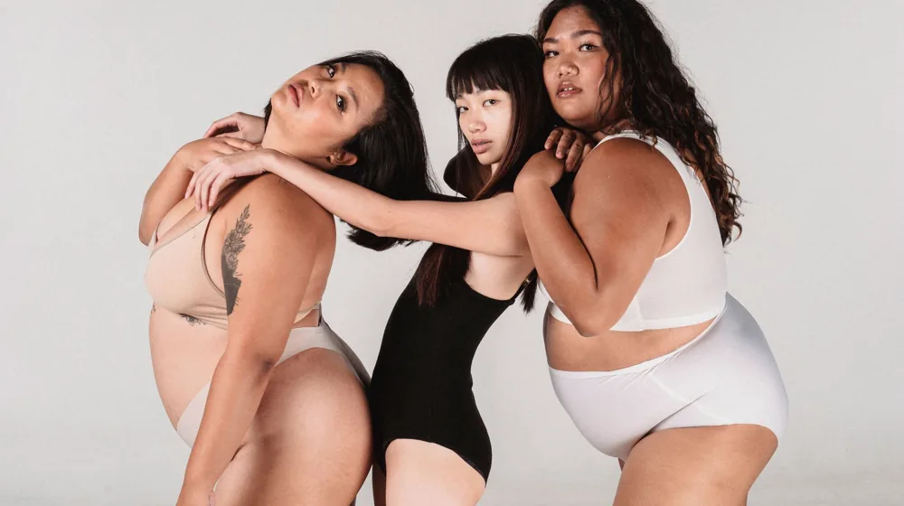

내 몸 사용 설명서? 사상체질 진단, 전문가 없이 내 체질 아는 법
사진: Roberto Hund / Pexels (무료 이미지, 출처 표기)
사상체질, 나를 이해하는 가장 쉬운 길

자신에게 맞는 다이어트법, 효과 좋은 영양제, 나에게 맞는 음식까지. 건강 정보를 찾아 헤매다 결국 지쳐버린 경험 있으신가요? 사상체질은 사람의 타고난 몸과 마음의 특성을 네 가지 유형(태양인, 태음인, 소양인, 소음인)으로 분류하여, 나에게 맞는 건강 관리법을 제시하는 한국 전통 의학 이론입니다.
내 체질만 정확히 안다면 방황할 필요 없이 나만을 위한 맞춤형 건강법을 찾을 수 있습니다. 지금부터 사상체질 진단 방법부터 체질별 특징, 그리고 실생활에 적용할 수 있는 관리법까지 자세히 알려드립니다.
내 사상체질은? 정확한 진단 방법부터 자가진단 체크리스트까지
사상체질 진단은 크게 전문가 진단과 자가진단으로 나눌 수 있습니다. 가장 정확한 방법은 숙련된 한의사의 진맥, 문진, 체형 관찰 등을 통한 전문가 진단입니다. 하지만 전문가를 찾아가기 전, 기본적인 자가진단을 통해 내 체질을 추측해 볼 수도 있습니다.
전문가 진단: 한의원 방문
- 진맥 및 문진: 한의사는 맥박, 설태(혀 상태) 등을 살피고, 평소 식습관, 소화 능력, 수면 상태, 성격 경향, 자주 앓는 질병 등을 상세히 질문하여 체질을 판단합니다.
- 체형 및 얼굴 관찰: 신체 각 부위의 발달 정도, 얼굴 생김새 등을 종합적으로 파악합니다.
- 음성 및 심리 상태: 목소리 톤이나 말하는 방식, 평소 감정 상태 등도 진단의 중요한 단서가 됩니다.
전문 한의사의 진단은 객관적이고 종합적인 판단을 기반으로 하므로, 정확도가 가장 높습니다. 2024년 5월 기준으로도 많은 한의원에서 사상체질 진단을 제공하고 있으니, 정확한 진단을 원한다면 방문을 권장합니다.
자가진단 체크리스트: 주요 특징 살펴보기
아래는 각 체질의 대표적인 특징을 정리한 것입니다. 여러 항목을 종합적으로 고려하여 자신에게 가장 가깝다고 생각하는 체질을 찾아보세요. 단, 자가진단은 참고용이며, 정확한 체질 감별은 전문가와 상담해야 합니다.
- 체형:
- 태양인: 상체가 발달하고 하체가 약하며, 목덜미가 굵고 허리가 가는 편입니다.
- 태음인: 허리 부위가 발달하고 가슴 부위가 약하며, 살집이 있는 경우가 많습니다.
- 소양인: 가슴 부위가 발달하고 엉덩이 부위가 약하며, 민첩하고 날렵한 인상이 많습니다.
- 소음인: 전체적으로 마른 편이며, 엉덩이 부위가 발달하고 가슴 부위가 약한 경우가 많습니다.
- 성격:
- 태양인: 창의적이고 진취적이며, 리더십이 강하나 감정 기복이 있을 수 있습니다.
- 태음인: 느긋하고 인내심이 강하며, 안정적이지만 게으르거나 고집이 셀 수 있습니다.
- 소양인: 활동적이고 열정적이며, 정의감이 강하나 성급하고 직설적일 수 있습니다.
- 소음인: 온화하고 섬세하며, 계획적이지만 소심하거나 예민할 수 있습니다.
- 건강 특징:
- 태양인: 폐 기능이 좋으나 간 기능이 약하고, 소화기 계통이 약할 수 있습니다.
- 태음인: 간 기능이 좋으나 폐 기능이 약하고, 비만, 고혈압 등에 취약할 수 있습니다.
- 소양인: 비위(소화기) 기능이 좋으나 신장 기능이 약하고, 열이 많아 변비가 잦을 수 있습니다.
- 소음인: 신장 기능이 좋으나 비위 기능이 약하고, 몸이 차고 소화불량이 잦을 수 있습니다.
태양인·태음인·소양인·소음인, 내 체질 핵심 특징과 취약점
각 체질은 고유한 신체적, 정신적 특성을 가집니다. 이를 이해하면 왜 어떤 음식은 나에게 잘 맞고, 어떤 질병에 유독 취약한지 알 수 있습니다.
체질별 맞춤 건강 관리: 먹거리부터 생활 습관은?
내 체질에 맞는 생활 관리는 건강을 유지하고 질병을 예방하는 핵심입니다. 여기서는 각 체질별로 실천할 수 있는 구체적인 관리법을 제안합니다.
- 태양인:
간에 부담을 주는 자극적인 음식과 기름진 음식을 피하고, 담백한 해산물이나 채소를 위주로 섭취하세요. 과도한 경쟁을 피하고, 스트레스 관리와 하체 단련 운동에 집중하는 것이 좋습니다.
- 태음인:
소화하기 어려운 밀가루 음식이나 고칼로리 음식을 줄이고, 채소와 단백질 위주의 식단으로 체중 관리에 신경 써야 합니다. 규칙적인 유산소 운동으로 땀을 내는 것이 좋으며, 게으름을 경계하고 활동적인 생활을 유지하세요.
- 소양인:
몸의 열을 식혀주는 시원한 성질의 음식(오이, 수박 등)을 섭취하고, 매운 음식이나 너무 뜨거운 음식은 피하세요. 성급한 성격을 조절하고 마음을 안정시키는 명상이나 요가와 같은 운동이 도움될 수 있습니다.
- 소음인:
몸을 따뜻하게 해주는 음식(닭고기, 인삼 등)을 섭취하고, 찬 음식이나 생채소는 피해야 합니다. 소화기가 약하므로 과식하지 않고 소식을 하는 것이 중요합니다. 스트레스를 잘 해소하고, 복부 마사지 등으로 혈액순환을 돕는 것이 좋습니다.
사상체질, 맹신보다 이해가 중요한 이유
사상체질은 나의 타고난 기질과 건강 경향성을 이해하는 데 매우 유용한 도구입니다. 하지만 너무 맹신하여 특정 음식이나 행동을 극단적으로 피하거나 강요하는 것은 오히려 건강에 해로울 수 있습니다.
예를 들어, 소음인이라고 해서 모든 찬 음식을 무조건 피해야 하는 것은 아니며, 개인의 현재 건강 상태와 환경이 더 중요하게 고려되어야 합니다. 사상체질은 하나의 참고 자료로 활용하고, 자신의 몸이 보내는 신호에 귀 기울이며 균형 잡힌 생활을 유지하는 것이 가장 중요합니다. 필요하다면 한의사 등 전문가와 꾸준히 상담하여 자신에게 맞는 건강법을 찾아나가시길 권장합니다.
🔗 이 글도 함께 보면 좋아요: SNL 김아영 배우: 다채로운 매력과 주요 출연작 정리